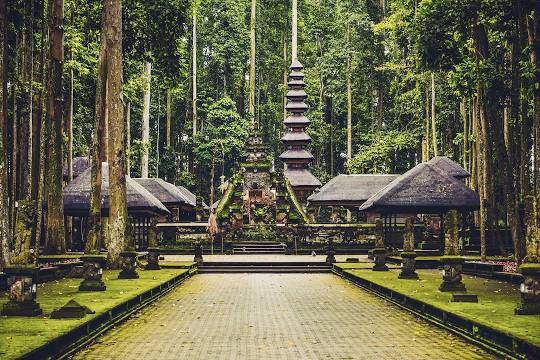
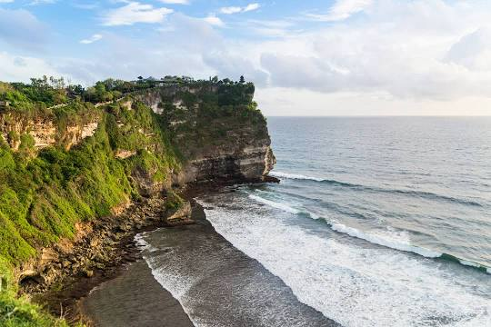
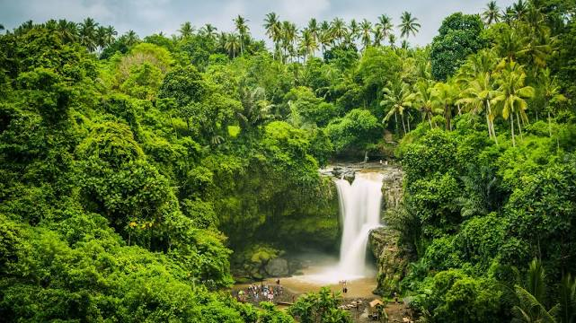

| GAMBAR | OBJEK WISATA | DETAIL | BOOKING |
|---|---|---|---|
|  | Mandala Suci Wenara Wana | Mandala Suci Wenara Wana atau disebut juga Monkey Forest Ubud merupakan sebuah tempat cagar alam dan kompleks candi yang terletak di desa Padangtegal Ubud, Bali. Di tempat ini mempunyai kurang lebih 1260 ekor monyet ekor panjang. | BOOKING |
|  | Pura Luhur Uluwatu | Pura Luhur Uluwatu atau Pura Uluwatu merupakan pura yang berada di wilayah Desa Adat Pecatu, Kecamatan Kuta Selatan, Kabupaten Badung. Pura yang terletak di ujung barat daya pulau Bali di atas anjungan batu karang yang terjal dan tinggi serta menjorok ke laut ini merupakan Pura Sad Kayangan yang dipercaya oleh orang Hindu sebagai penyangga dari 9 mata angin. | BOOKING |
|  | Air Terjun Tegenungan | Air terjun Tegenungan adalah air terjun yang terletak di Desa Kemenuh, Kecamatan Sukawati, Kabupaten Gianyar, berjarak 30 km dari Kota Denpasar. Air terjun ini memiliki ketinggian 15 meter. Meski tidak begitu tinggi, debit airnya sangat deras. Airnya juga bersih dan bening. Air terjun ini berasal dari Sungai Tukad Petanu. Tempat ini sering digunakan untuk melakukan hal-hal ekstrem, seperti melompat dari puncak air terjun. | BOOKING |
{kind=link}
{kind=link}
{kind=link}